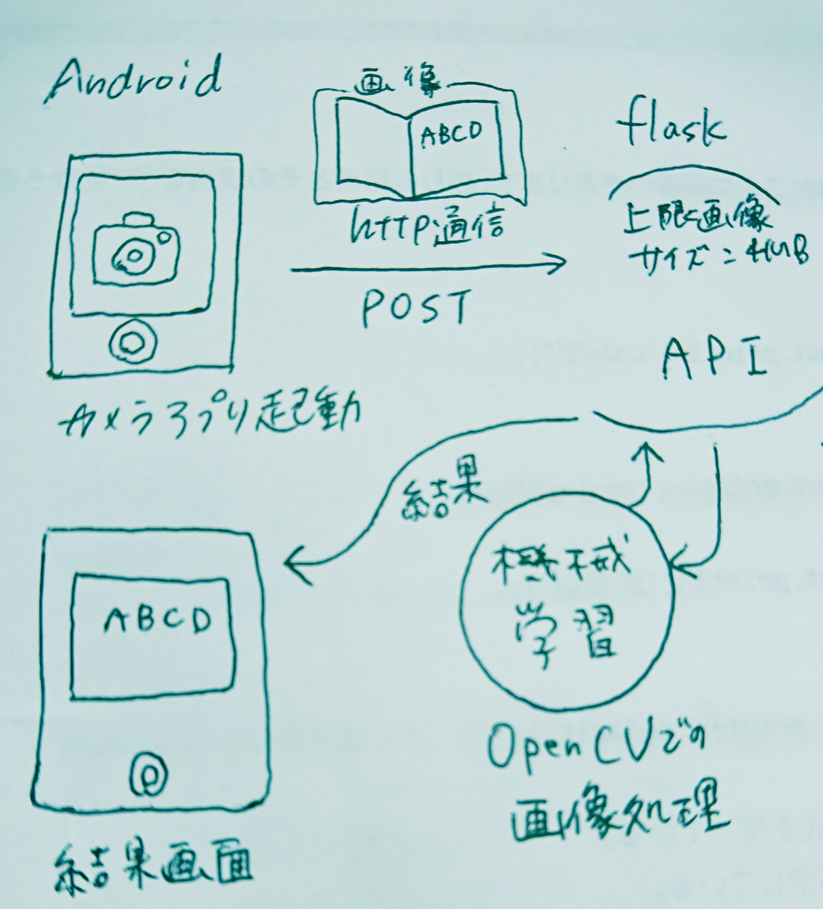

設計・仕様
処理フロー
１．androidのカメラで画像を撮影
android studioを使い、javaで実装。
androidの標準カメラで写真を撮影し、Exif情報を取得し、回転処理を加える。
画像をflaskで作った機械学習APIにHttp通信でPOSTする。
レスポンスされたテキストをアプリ画面に表示する。
２．flaskで機械学習APIを作成、文字認識
flask(python)で機械学習APIを作成。
windowsの英数字フォントデータを加工し、学習させ、重みデータを得る。
英数字の混ざったテキストを同時に認識することは難しいと判断("l"と"1","Z"と"2"など)し、
英字、数字を別モデルで学習させ、2種類の重みデータを得た。
#重みデータを作るコード
androidアプリで英字のみのテキストか、数字のみかをユーザーに選択してもらう。
選択されたボタンに応じて英字/数字の重みデータを読み込む。
#英字選択の場合
if weight == 'eng':
nlist = alphabet_model.predict(np.array(X))
for i, n in enumerate(nlist):
ans = n.argmax()
alphabet_dic = {i:chr(c) for i,c in enumerate(range(ord('A'),ord('Z')+1))}
alphabet_dic.update({i+26:chr(c) for i,c in enumerate(range(ord('a'),ord('z')+1))})
res = alphabet_dic.get(ans)
if res == None:
result.append(ans)
else:
result.append(res)
#数字選択の場合
elif weight == 'num':
nlist = numeral_model.predict(np.array(X))
for i, n in enumerate(nlist):
ans = n.argmax()
result.append(ans)
return result
学習時の認識精度は89.5%であった。
フォントから切り取った学習用画像データを確認したところ、"i" の上部 "・" の部分のみが
認識されており、この誤認識画像が正答率を下げているようだ。
今回はプログラムの完成を目標としており、高い認識精度は求めない。
実機テストでは、画像のゆがみや明暗の差によるテキスト誤検出により認識精度が下がることが認められた。
後述の画像処理に重点を置き、より正しくテキストを検出させることで、実機テストでもこの認識精度に近づけることにした。
３．画像処理
ぼかし、二値化、回転(画像のゆがみ補正)をOpenCVで実装。
これらの処理を通すことで、後の文字認識の精度を上げる。

↓(元画像)

↓(二値化し、ノイズを緩和した)

(二値化画像からテキストの外接矩形を検出し、元画像に書き出したもの)
#画像回転コード
小さすぎる・大きすぎる矩形の処理を飛ばし、左上から順に矩形を並べ替え、認識させる。
モデル
モデルはkerasを使用しCNNを作成。
#英字の認識モデル
from keras.models import Sequential
def build_model():
model = Sequential()
model.add(Conv2D(32, kernel_size=(3, 3),
activation='relu',
input_shape=(28,28,1)))
model.add(MaxPooling2D(pool_size=(2, 2)))
model.add(Flatten())
model.add(Dense(784, activation='relu'))
model.add(Dense(52, activation='softmax'))